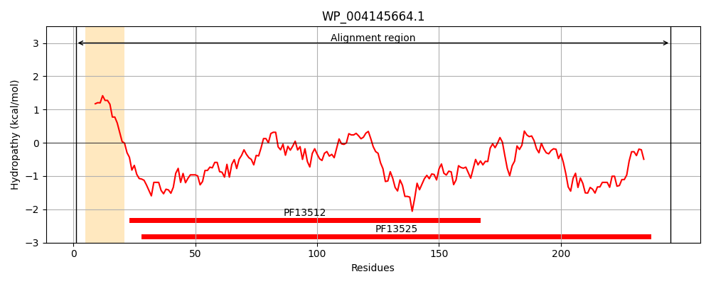
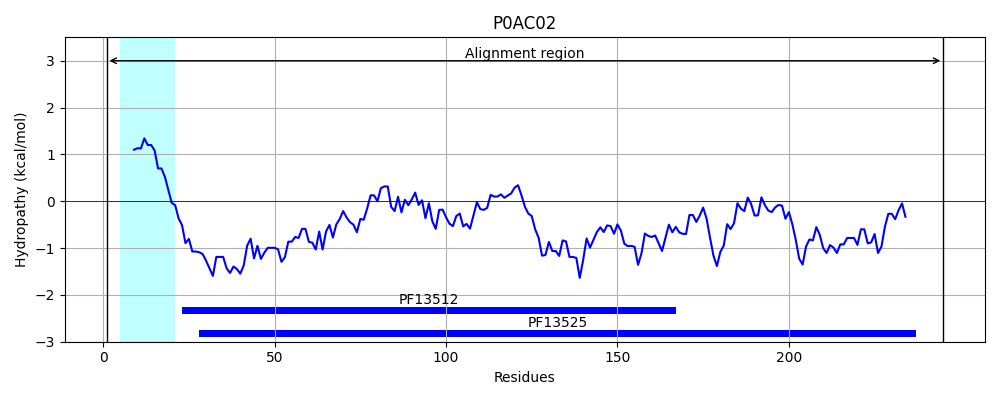
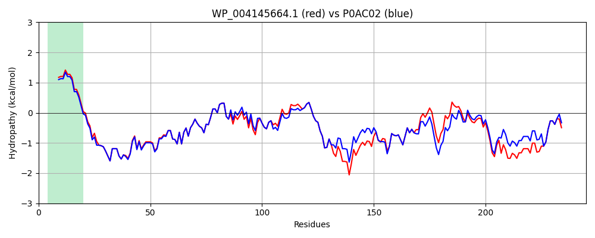

Hit Accession: P0AC02
Hit TCID: 1.B.33.1.3
Hit Description: gnl|BL_ORD_ID|8728 gnl|TC-DB|P0AC02|1.B.33.1.3 UPF0169 lipoprotein yfiO - Escherichia coli.
Mach Len: 245
e:0.000000
Query TMS Count : 1
Hit TMS Count: 1
TMS-Overlap Score: 0.850000
Predicted Substrates:CHEBI:8526;protein polypeptide chain
BLAST Alignment:
Score: 1186 , Bit scores: 461 bits, E-value: 2.1e-167, Alignment length: 245, Percentage identity: 92
Query: 1 MTRMKYLVAAATLSLALVGCSGSKEEVPDNPPNEIYATAQQKLQDGNWKQAITQLEALDNRYPFGPYSQQVQLDLIYAYYKNADLPLAQAAIDRFMRLNPTHPNIDYVIYMRGLTNMALDDSALQGFFGVDRSDRDPQHARDAFNDFSKLVRGYPNSQYATDAYKRMVFLKDRLAKYELSVVDYYTDRGAWVAVVNRVEGMMRNYPDTQATRDALPKMENAYRQMQMNAQADKVAKIIAANSKNT 245
MTRMKYLVAAATLSL L GCSGSKEEVPDNPPNEIYATAQQKLQDGNW+QAITQLEALDNRYPFGPYSQQVQLDLIYAYYKNADLPLAQAAIDRF+RLNPTHPNIDYV+YMRGLTNMALDDSALQGFFGVDRSDRDPQHAR AF+DFSKLVRGYPNSQY TDA KR+VFLKDRLAKYE SV +YYT+RGAWVAVVNRVEGM+R+YPDTQATRDALP MENAYRQMQMNAQA+KVAKIIAANS NT
Sbjct: 1 MTRMKYLVAAATLSLFLAGCSGSKEEVPDNPPNEIYATAQQKLQDGNWRQAITQLEALDNRYPFGPYSQQVQLDLIYAYYKNADLPLAQAAIDRFIRLNPTHPNIDYVMYMRGLTNMALDDSALQGFFGVDRSDRDPQHARAAFSDFSKLVRGYPNSQYTTDATKRLVFLKDRLAKYEYSVAEYYTERGAWVAVVNRVEGMLRDYPDTQATRDALPLMENAYRQMQMNAQAEKVAKIIAANSSNT 245 | Protein Hydropathy Plots: |
|---|
|  |  |
Pairwise Alignment-Hydropathy Plot:
|
|---|
|  |